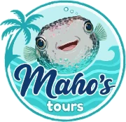

Todos los destinos
Un mar, siete formas de vivirlo
Del malecón a Balandra, a la isla Espíritu Santo, a los lobos marinos de Los Islotes y, del otro lado, a Isla Cerralvo. Elige un destino en la lista o en el mapa.
Compartido

MAHO'STOURS · LA PAZTours en barco · La Paz, B.C.S.
Toca una y te ordenamos los tours que más te van.
Compartidos y privados
Bahía de La Paz · Mar de Cortés
Todos salen del malecón de La Paz. Toca un tour y mira su ruta parada por parada, qué incluye y cuánto cuesta.
Todos los destinos
Del malecón a Balandra, a la isla Espíritu Santo, a los lobos marinos de Los Islotes y, del otro lado, a Isla Cerralvo. Elige un destino en la lista o en el mapa.
Compartido
Yates privados · 8 horas
Eliges la playa el mismo día, según el viento y los permisos de SEMARNAT: Punta Lupona, San Gabriel o La Bonanza, en Espíritu Santo. Después, Balandra y la colonia de lobos de La Loberita, junto al faro de San Lorenzo.
12 personas
$32,000 MXN
15 personas
$30,000 MXN
8 personas
$26,500 MXN
Lo que sube a bordo
En el Sea Ray 40 y el Chris Craft 45, para todo el grupo.
En la ruta
Antes de ir
No es requisito. En el snorkel usas chaleco salvavidas y el guía está contigo en el agua. Si prefieres no meterte, disfrutas igual desde la lancha o la playa.
La ruta y la playa se eligen el mismo día, según el viento y los permisos de SEMARNAT. Si la Capitanía de Puerto cierra la navegación, nadie sale: te escribimos para cambiar la fecha.
En el compartido a Espíritu Santo + Balandra, $1,200 MXN por menor. En los tours privados y los yates el precio es por embarcación, sin importar la edad.
El compartido a Espíritu Santo + Balandra sale del Muelle Fiscal, en el malecón. Los privados y los yates salen de Marina La Costa. Al reservar te mandamos la ubicación por WhatsApp.
No. La licencia de pesca deportiva se tramita antes de salir; la carnada y el lunch tampoco van incluidos. Te decimos cómo sacarla al reservar.
Se ve en la Bahía de La Paz en temporada, que suele ir de otoño a primavera. El horario cambia cada día, así que conviene tener el día libre. Escríbenos y te decimos cómo va la semana.
Elige tu tour en el mapa, pon la fecha y cuántos van, y toca Apartar por WhatsApp: el mensaje sale listo. Maho's te confirma lugar y forma de pago.
Punto de salida
Contestando WhatsApp ahora
Todos los días · 8:00 a 20:00
Dinos la fecha y cuántos van. Te contestamos con lugar, hora y punto de salida.